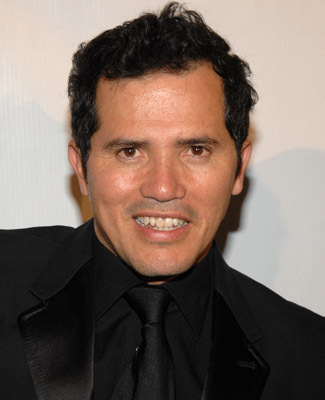
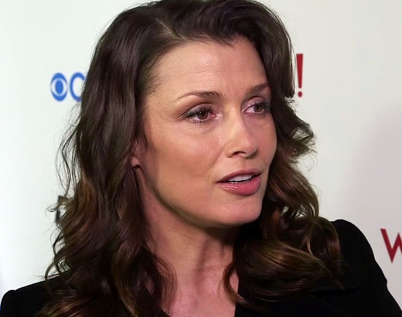

Personagem: John Wick
Nascimento: 2 de setembro de 1964 (idade 57 anos)
Altura: 1,86m
Origem: Libano
Sobre: Keanu Charles Reeves (Beirute, 2 de setembro de 1964) é um ator, cineasta, escritor, produtor cinematográfico e músico canadense, nascido no Líbano, teve uma vida complicada com seus pais, sua mae se casou mais de 6 vezes
Personagem: Winston
Nascimento: 29 de setembro de 1942 (79 anos)
Origem: Inglaterra
Sobre: É filho do futebolista profissional Harry McShane, que jogou no Manchester United. Estudou na Royal Academy of Dramatic Arts e fez a sua primeira aparição no cinema em The Wild and the Willing, filme de 1962, Apesar de mais conhecido pelas suas aparições televisivas, Ian McShane tem uma longa carreira no teatro, actuando em Londres, na peça Loot, de Joe Horton, e ao lado de Judi Dench em The Promise, de Aleksei Arbuzov.
Personagem: Charon
Nascimento: 7 de junho de 1962 (60 anos)
Origem: Baltimore, Maryland, Estados Unidos
Sobre: Lance Reddick, é um músico e ator de cinema, teatro e televisão dos Estados Unidos.

Nascimento: 22 de julho de 1964 (57 anosP)
Origem: Colombia, bogota
Sobre: John Alberto Leguizamo é um ator, dublador, comediante, produtor de cinema, dramaturgo e roteirista norte-americano nascido na Colombia. Ele ganhou destaque co-estrelando o filme de ação/ comédia Super Mario Bros (1993) como Luigi, e um papel coadjuvante no drama criminal O pagamento final e Perseguido pelo Passado (1993), dirigido por Brian de Palma. Outros papéis notáveis incluem a preguiça Sid nos filmes de animação da Era do Gelo (2002-2016) e o papel de narrador da sitcom The Brothers García (2000-2004). A partir de 2009, ele apareceu em mais de 75 filmes, produziu mais de 10 filmes, estrelou na Broadway em várias produções (ganhando vários prêmios), fez mais de 12 aparições na televisão e produziu ou atuou em muitos outros programas de televisão.

Personagem: Charon
Nascimento: 28 de abril de 1971 (51 anos)
Origem: Binghamton, Nova Iorque Estados Unidos
Sobre: Bridget nasceu em Binghamton, Nova York em 28 de abril de 1971, filha de imigrantes Irlandeses, Mary Bridget, uma professora, e Edward Bradley Moynahan, um cientista e atual administrador da University of Massachusetts, em Amherst. Ela cresceu em Longmeadow, Massachusetts, junto com seus dois irmãos, Andrew e Sean. ela é a filha do meio. Moynahan estudou na Longmeadow High School e se formou em 1989. Na escola era ela uma das atletas, participando de esportes como futebol, basquete e lacrosse.